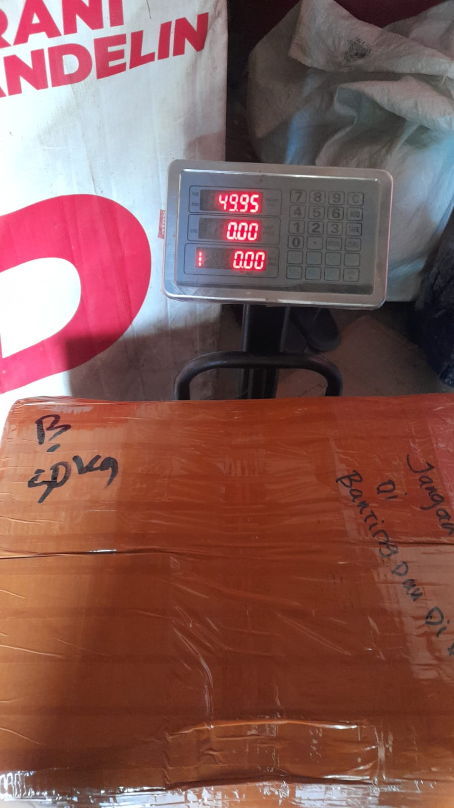

Lion Parcel Terdekat di Rancaekek untuk Pengiriman Berbagai Barang

Sedang mencari Lion Parcel terdekat di Rancaekek untuk mengirim paket, dokumen, barang dagangan, atau kebutuhan usaha? Lion Parcel Bandung POS101 Nanjungmekar dapat menjadi salah satu lokasi yang bisa Anda hubungi untuk mendapatkan informasi mengenai layanan pengiriman, tarif, dan tujuan pengiriman yang tersedia.
Bagi masyarakat Rancaekek, Nanjungmekar, Cicalengka, dan kawasan sekitarnya, memilih agen pengiriman yang mudah dijangkau dapat membantu mempermudah kegiatan sehari-hari maupun operasional bisnis. Baik untuk mengirim barang kepada keluarga, memenuhi pesanan pelanggan, maupun mengirim perlengkapan usaha, sebaiknya pilih layanan sesuai jenis barang, tujuan, berat, dan kebutuhan waktu pengiriman.
Melalui artikel ini, Anda dapat mengetahui informasi lokasi Lion Parcel Bandung POS101, jenis kiriman yang bisa ditanyakan, cara mengecek ongkir, serta hal-hal yang perlu disiapkan sebelum mengirim paket.
Butuh Informasi Pengiriman dari Rancaekek?
Tanyakan tarif, tujuan pengiriman, ketentuan barang, dan pilihan layanan yang tersedia sebelum datang ke agen.
💬 Chat WhatsApp 0851-8309-04861. Lokasi Lion Parcel Terdekat di Rancaekek
Bagi Anda yang mencari agen Lion Parcel di sekitar Rancaekek, salah satu lokasi yang dapat dituju adalah Lion Parcel Bandung POS101 Nanjungmekar. Sebelum berangkat, sebaiknya buka petunjuk arah Google Maps atau hubungi agen untuk memastikan lokasi dan jam operasional terbaru.
Informasi alamat agen:
- Nama agen: Lion Parcel Bandung POS101 Nanjungmekar
- Alamat: Jl. Raya Barat Cicalengka RT 1 RW 1, Nanjung Mekar, Rancaekek, Kabupaten Bandung, Jawa Barat.
- WhatsApp: 0851-8309-0486
- Jam operasional: Konfirmasikan terlebih dahulu melalui WhatsApp sebelum berkunjung.
📍 Lion Parcel Bandung POS101 Nanjungmekar
Lihat petunjuk arah menuju lokasi agen di kawasan Rancaekek, Kabupaten Bandung.
2. Pengiriman Paket untuk Kebutuhan Sehari-hari
Layanan ekspedisi dibutuhkan untuk berbagai keperluan, mulai dari mengirim barang kepada keluarga hingga mengirim pesanan kepada pembeli. Jika Anda tinggal di Rancaekek dan ingin mengirim paket, siapkan informasi mengenai isi kiriman, berat, ukuran, serta alamat tujuan agar petugas dapat membantu memeriksa pilihan layanan yang sesuai.
Beberapa jenis kiriman yang dapat Anda tanyakan kepada agen antara lain:
- Paket pribadi: Barang kebutuhan sehari-hari, pakaian, aksesori, dan barang lain yang memenuhi ketentuan pengiriman.
- Dokumen: Berkas, dokumen usaha, dan surat yang memerlukan layanan pengiriman sesuai ketentuan.
- Pesanan toko online: Paket untuk pelanggan marketplace maupun penjualan melalui media sosial.
- Barang UMKM: Produk usaha rumahan, kerajinan, pakaian, dan barang dagangan lainnya.
- Perlengkapan dan suku cadang: Spare part atau komponen usaha yang jenis, ukuran, dan isinya memenuhi ketentuan layanan.
Penerimaan setiap jenis barang tetap bergantung pada ketentuan Lion Parcel, jenis layanan, ukuran, berat, serta pembatasan barang yang berlaku. Karena itu, konfirmasikan terlebih dahulu jika barang yang dikirim memiliki karakteristik khusus.
3. Jasa Pengiriman Barang untuk Toko Online dan UMKM
Pelaku UMKM dan penjual online di Rancaekek dapat memerlukan jasa ekspedisi untuk mengirim pesanan secara rutin. Pengiriman yang terencana membantu penjual mengatur stok, menyiapkan pesanan, dan memberikan informasi pengiriman kepada pembeli.
Sebelum mengirim barang dagangan, perhatikan beberapa hal berikut:
- Gunakan kemasan yang kuat dan sesuai dengan karakteristik produk.
- Pastikan alamat penerima, nomor telepon, dan kode pos sudah benar.
- Catat berat serta ukuran paket untuk membantu pengecekan tarif.
- Bandingkan pilihan layanan berdasarkan biaya, estimasi waktu, dan kebutuhan penerima.
- Simpan bukti pengiriman dan nomor resi untuk memantau perjalanan paket.
Jika Anda mengirim banyak paket untuk usaha, tanyakan kepada agen mengenai pilihan layanan yang sesuai dengan pola pengiriman Anda. Ketersediaan layanan dan ketentuan untuk pengiriman dalam jumlah banyak perlu dikonfirmasi terlebih dahulu.
4. Pengiriman Spare Part dan Barang Kebutuhan Industri
Kawasan Bandung dan sekitarnya memiliki berbagai kegiatan perdagangan, bengkel, manufaktur, dan industri. Dalam kegiatan tersebut, pengiriman komponen, perlengkapan kerja, serta spare part tertentu dapat menjadi kebutuhan penting ketika barang harus dikirim ke pelanggan, pemasok, atau lokasi usaha lain.
Untuk mengirim spare part dari Rancaekek, siapkan informasi mengenai nama barang, bahan, dimensi, berat, dan tujuan pengiriman. Informasi ini membantu petugas memeriksa apakah barang dapat diterima dan layanan mana yang sesuai.
Perlu diperhatikan bahwa tidak semua barang industri bisa dikirim melalui layanan paket biasa. Barang berukuran besar, sangat berat, mudah terbakar, mengandung bahan berbahaya, atau memiliki persyaratan khusus mungkin memerlukan penanganan maupun layanan berbeda. Jangan mengirim barang sebelum memastikan ketentuan penerimaannya.
5. Kirim Paket dari Rancaekek ke Luar Kota
Anda juga dapat menanyakan pilihan pengiriman dari Rancaekek ke berbagai kota di Indonesia, misalnya Jakarta, Bekasi, Bogor, Surabaya, Semarang, Yogyakarta, atau kota tujuan lainnya.
Tarif dan estimasi waktu pengiriman dapat berbeda berdasarkan kota asal dan tujuan, berat aktual atau berat volumetrik, dimensi paket, serta layanan yang dipilih. Karena itu, jangan hanya berpatokan pada tarif dari rute lain ketika menghitung biaya pengiriman.
Agar pengecekan lebih mudah, sampaikan informasi berikut kepada petugas:
- Kota atau kode pos tujuan.
- Jenis barang yang akan dikirim.
- Berat dan ukuran paket setelah dikemas.
- Apakah kiriman membutuhkan penanganan khusus.
- Kebutuhan waktu penerimaan jika ada.
Dengan informasi tersebut, agen dapat membantu memeriksa pilihan layanan, tarif, dan estimasi pengiriman yang berlaku untuk kiriman Anda.
6. Pengiriman Paket dari Bandung ke Luar Negeri
Untuk kebutuhan pengiriman internasional, seperti paket dari Bandung ke Taiwan, Malaysia, Singapura, Korea Selatan, atau negara tujuan lainnya, pastikan terlebih dahulu apakah negara tujuan dan jenis barang Anda dilayani oleh layanan yang tersedia.
Pengiriman ke luar negeri memiliki ketentuan tambahan yang dapat mencakup dokumen, deskripsi isi paket, nilai barang, pemeriksaan bea cukai, serta pembatasan barang di negara tujuan. Tarif dan waktu pengiriman juga dapat berbeda dari pengiriman domestik.
Sebelum membawa paket, hubungi agen untuk menanyakan ketersediaan rute internasional, persyaratan dokumen, estimasi biaya, dan ketentuan barang. Jangan menganggap semua jenis barang dapat dikirim ke setiap negara.
7. Cara Mengecek Ongkir Lion Parcel dari Rancaekek
Ingin mengetahui ongkos kirim sebelum datang ke agen? Anda dapat menyiapkan data kiriman terlebih dahulu agar pengecekan lebih mudah.
- Lokasi asal: Rancaekek, Kabupaten Bandung.
- Lokasi tujuan: Kota, wilayah, atau kode pos penerima.
- Berat paket: Berat barang beserta kemasannya.
- Ukuran paket: Panjang, lebar, dan tinggi dalam sentimeter.
- Jenis barang: Jelaskan isi paket secara akurat.
Selanjutnya, gunakan kanal resmi Lion Parcel untuk mengecek tarif atau hubungi agen POS101. Tarif akhir dapat bergantung pada ketentuan pengukuran, layanan, dan tujuan pengiriman yang berlaku.
Tanyakan Ongkir dan Pilihan Pengiriman
Siapkan kota tujuan, berat paket, ukuran barang, dan jenis kiriman agar pengecekan dapat dilakukan dengan lebih mudah.
💬 Tanya Ongkir via WhatsApp8. Tips Memilih Layanan Pengiriman yang Tepat
Setiap kiriman memiliki kebutuhan yang berbeda. Paket kecil untuk keluarga tentu tidak selalu membutuhkan layanan yang sama dengan komponen usaha atau barang dagangan yang dikirim dalam jumlah banyak.
Berikut beberapa hal yang sebaiknya dipertimbangkan:
- Biaya: Sesuaikan ongkir dengan anggaran dan nilai barang.
- Estimasi waktu: Pilih layanan berdasarkan kebutuhan penerima.
- Keamanan kemasan: Lindungi barang dari benturan dan kerusakan selama perjalanan.
- Pelacakan: Simpan nomor resi untuk memantau status pengiriman.
- Ketentuan barang: Pastikan isi kiriman boleh dikirim dan memenuhi persyaratan layanan.
- Asuransi atau perlindungan: Tanyakan pilihan perlindungan, syarat, dan ketentuan yang berlaku jika dibutuhkan.
9. Apakah Bisa Mengirim Semua Jenis Barang?
Tidak semua jenis barang dapat diterima oleh jasa ekspedisi. Barang tertentu dapat dilarang, dibatasi, atau memerlukan prosedur dan dokumen tambahan. Ketentuan juga dapat berbeda untuk pengiriman domestik dan internasional.
Sebelum mengirim, informasikan isi paket secara jujur kepada petugas. Jangan menyamarkan nama barang atau memasukkan benda yang dilarang ke dalam kemasan. Jika barang berupa cairan, baterai, perangkat elektronik tertentu, bahan kimia, barang bernilai tinggi, atau komponen industri, mintalah konfirmasi mengenai ketentuan yang berlaku.
Untuk barang besar atau berat yang tidak sesuai dengan layanan paket reguler, tanyakan apakah tersedia pilihan layanan lain yang dapat menangani kebutuhan tersebut. Ketersediaannya perlu diperiksa berdasarkan jenis barang dan rute.
10. Area Rancaekek dan Cicalengka yang Bisa Menanyakan Layanan
Informasi Lion Parcel Bandung POS101 dapat berguna bagi masyarakat yang mencari agen pengiriman di kawasan Rancaekek dan sekitarnya. Jika Anda berada di Nanjungmekar, Rancaekek, atau Cicalengka, periksa jarak dan rute menuju lokasi melalui Google Maps sebelum berangkat.
Untuk wilayah lain di Kabupaten Bandung, sebaiknya periksa lokasi agen terdekat dan ketersediaan layanan sesuai alamat Anda. Jarak, akses jalan, dan jam operasional dapat memengaruhi kenyamanan saat mengirim paket.
Kesimpulan
Jika Anda sedang mencari Lion Parcel terdekat di Rancaekek, Lion Parcel Bandung POS101 Nanjungmekar dapat dihubungi untuk menanyakan kebutuhan pengiriman paket, dokumen, barang dagangan, spare part tertentu, serta kiriman ke luar kota atau luar negeri sesuai layanan yang tersedia.
Sebelum mengirim, pastikan tujuan, berat, ukuran, isi paket, tarif, dan estimasi waktu sudah diperiksa. Untuk pengiriman internasional atau barang dengan persyaratan khusus, lakukan konfirmasi lebih dahulu agar proses pengiriman berjalan sesuai ketentuan.
Nama Agen: Lion Parcel Bandung POS101 Nanjungmekar
Alamat: Jl. Raya Barat Cicalengka RT 1 RW 1, Nanjung Mekar, Rancaekek, Kabupaten Bandung, Jawa Barat
WhatsApp: 0851-8309-0486
Hubungi agen untuk mendapatkan informasi terbaru mengenai layanan, tarif, dan tujuan pengiriman yang tersedia.